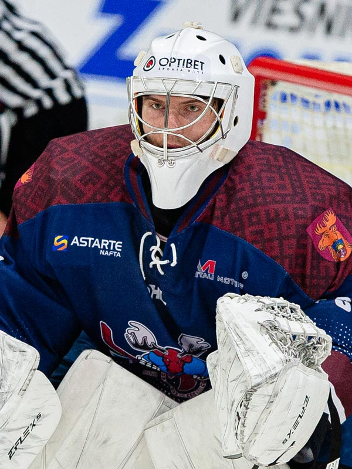
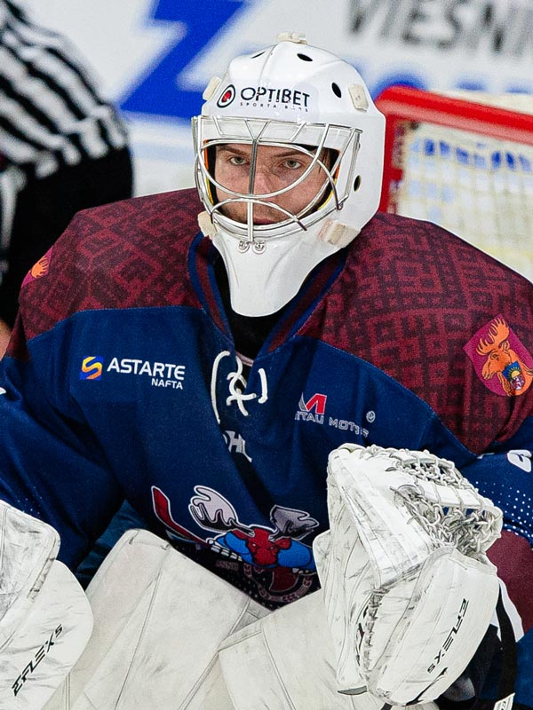

Uzbrucēju Artūru Ozoliņu pazīst katrs Latvijas izlases spēlētājs un treneris,
jo viņš daudzas reizes ir aizstāvējis valsts godu pārbaudes turnīros nacionālās
izlases sastāvā. Pagājušo sezonu Artūrs noslēdza Alpu līgas hokeja komandā “Lustenau”,
kurā aizvadīja 18 spēles un guva 5 vārtus un atdeva 11 rezultatīvās piespēles.
Latvijas Hokeja federācija 2020./2021. gada sezonā atzina Robertu Jekimovu
par Optibet hokeja līgas labāko uzbrucēju un pasniedza Sergeja Žoltoka balvu.
Roberts divas reizes Latvijas nacionālās izlases sastāvā spēlējis pasaules
čempionātā un vienu reizi olimpisko spēļu kvalifikācijas turnīrā. Leģionāra
lomā ir spēlējis Zviedrijā, Somijā, Austrijā, Krievijā, Dānijā un Francijā.